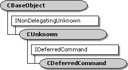

description: Deferred commands are queued by calls to methods on the IQueueCommand interface and are exposed by the filter graph manager and by some filters. ms.assetid: b2b177c6-af2b-4585-914f-001a6355a298 title: CDeferredCommand class ms.topic: reference ms.date: 4/26/2023 topic_type:
[The feature associated with this page, DirectShow, is a legacy feature. It has been superseded by MediaPlayer, IMFMediaEngine, and Audio/Video Capture in Media Foundation. Those features have been optimized for Windows 10 and Windows 11. Microsoft strongly recommends that new code use MediaPlayer, IMFMediaEngine and Audio/Video Capture in Media Foundation instead of DirectShow, when possible. Microsoft suggests that existing code that uses the legacy APIs be rewritten to use the new APIs if possible.]

Deferred commands are queued by calls to methods on the IQueueCommand interface and are exposed by the filter graph manager and by some filters. A successful call to one of these methods returns an IDeferredCommand interface representing the queued command.
A CDeferredCommand object represents a single deferred command and exposes the IDeferredCommand interface as well as other methods that permit time checks and actual execution. A CDeferredCommand object contains a reference to the CCmdQueue object on which it is queued.
Reference counts control the lifetime of the CDeferredCommand class. When calling the CDeferredCommand::Invoke member function, the calling application gets an interface pointer that is reference-counted, and the CCmdQueue object also holds a reference count on the deferred command. Calling the IDeferredCommand::Cancel member function takes the deferred command off the command queue and thus reduces the reference count by one. Once taken off the queue, the command cannot be put back on the queue.
| Protected Data Members | Description |
|---|---|
| m_bStream | Flag for stream time or presentation time. to be passed to the invoked method. |
| m_Dispatch | Accesses the ITypeInfo interface. |
| m_dispidMethod | Method on the interface to run. |
| m_DispParams | CDispParams object containing the DISPPARAMS parameter list |
| m_hrResult | Stores the returned HRESULT value. |
| m_iid | Globally unique identifier (GUID) of the interface. |
| m_pQueue | Pointer to the CCmdQueue object that exposes the IQueueCommand interface. |
| m_pUnk | IUnknown pointer to the interface on which the command will be run. |
| m_pvarResult | Resulting information, if any, from the invoked method. |
| m_time | Time at which the command will be run. |
| m_wFlags | Flags specifying the context of the invocation. |
| Member Functions | Description |
| CDeferredCommand | Constructs a CDeferredCommand object. |
| GetFlags | Retrieves the context flags associated with the deferred command. |
| GetIID | Retrieves the interface identifier (IID) of the interface on which the method will be run. |
| GetMethod | Retrieves the dispatch identifier of the method to be run. |
| GetParams | Retrieves the DISPPARAMS argument list to the method. |
| GetResult | Retrieves the resulting argument list, if one exists. |
| GetTime | Retrieves the time when the method will be run. |
| Invoke | Provides access to methods and properties exposed by an object. |
| IsStreamTime | Specifies whether the command is to be run at stream time or presentation time. |
| IDeferredCommand Methods | Description |
| Cancel | Cancels a previously queued CDeferredCommand::Invoke request. |
| Confidence | Not currently implemented. |
| Postpone | Specifies a new presentation time for a previously queued command. |
| GetHResult | Retrieves the HRESULT value of the invoked method. |
Â
Â
Â